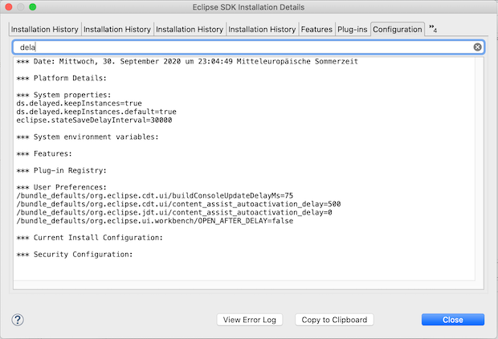
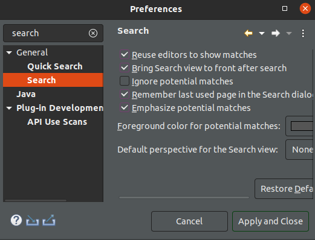
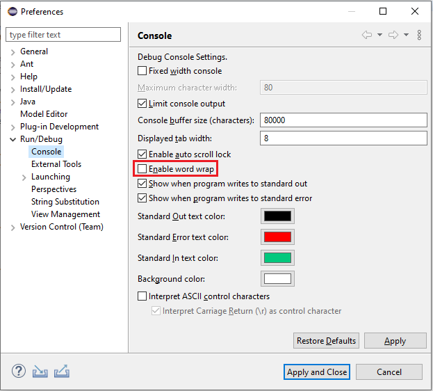
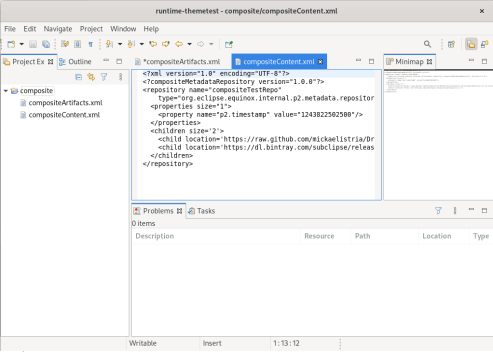
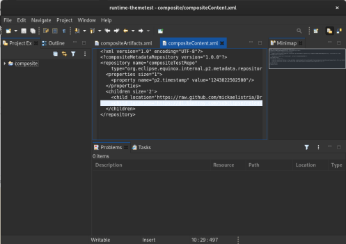
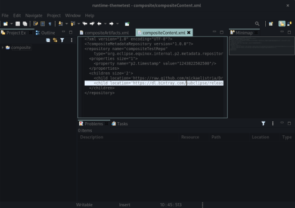
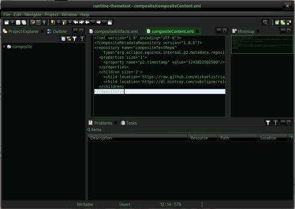
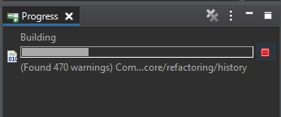
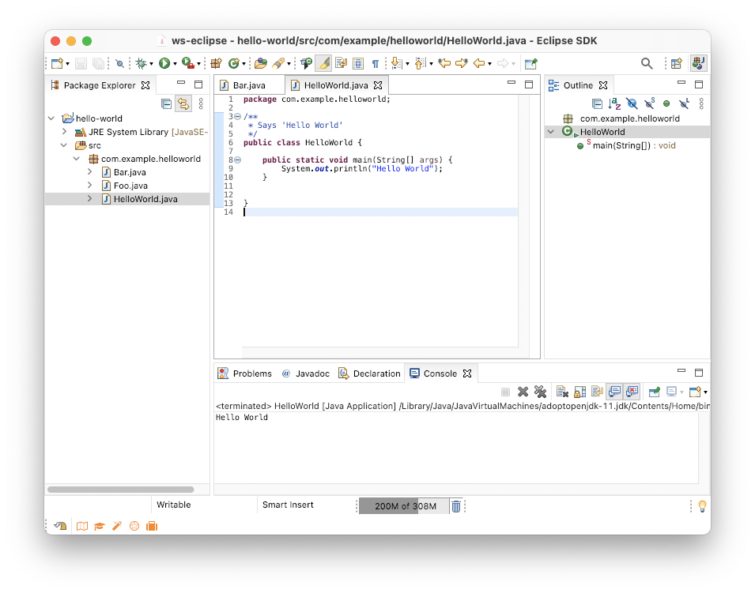

Views, Dialogs and Toolbar

A new preference Remember last used page in the Search dialog has been added to Preferences > General > Search page. This new preference is enabled by default.

Text Editors
Preferences

Themes and Styling
This screenshot shows the System theme in action under several GTK themes:
GTK Adwaita:

GTK Adwaita Dark:

GTK Kripton:

GTK Dark Mint:


Old:

New:
